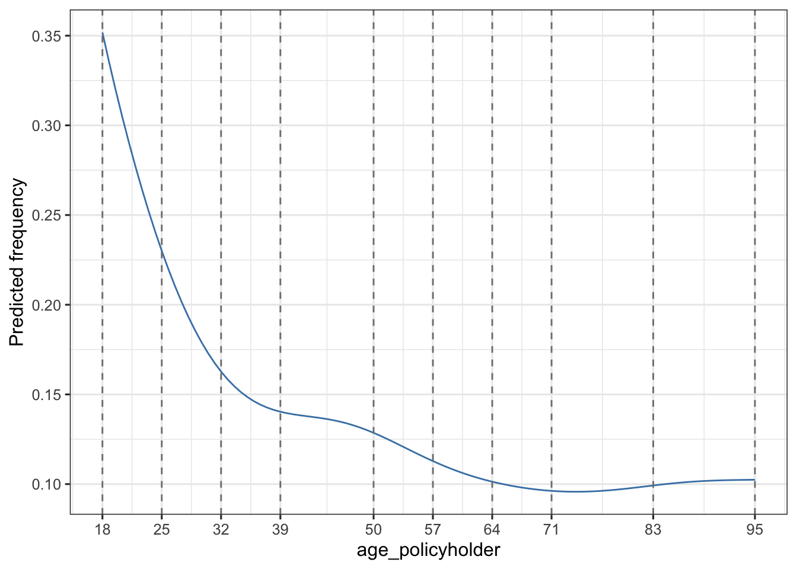

The project below describes parts of my Master’s thesis to obtain my degree in Actuarial Science and Mathematical Finance. The thesis was nominated for the Johan de Witt award for best actuarial thesis in 2016.
The goal of insurancerating is to give analytic techniques that can be used in insurance rating. It provides a data driven strategy for the construction of tariff classes in P&C insurance. The goal is to bin the continuous factors such that categorical risk factors result which capture the effect of the covariate on the response in an accurate way, while being easy to use in a generalized linear model (GLM).
It also adds functionality showing additional lines for the reference categories in the levels of the coefficients in the output of a generalized linear regression analysis. In addition it implements a procedure determining the level of a factor with the largest exposure, and thereafter changing the base level of the factor to this level.
You can install insurancerating from github with:
# install.packages("devtools")
devtools::install_github("MHaringa/insurancerating")This is a basic example which shows the techniques provided in insurancerating.
The first part shows how to construct tariff classes for the variable age_policyholder in the MTPL dataset:
library(insurancerating)
library(ggplot2)
library(dplyr)
x <- construct_tariff_classes(data = MTPL, nclaims = nclaims, x = age_policyholder, exposure = exposure)Show tariff classes:
autoplot(x)
The second part adds the constructed tariff classes for the variable age_policyholder to the dataset, and sets the base level of the factor age_policyholder to the level with the largest exposure. In this example the class for ages (35,52], which contains the largest exposure.
dat <- MTPL %>%
mutate(age_policyholder_class = x$tariff_classes) %>%
mutate_if(is.character, as.factor) %>%
mutate_if(is.factor, list(~biggest_reference(., exposure)))
str(dat)## 'data.frame': 32731 obs. of 5 variables:
## $ age_policyholder : int 43 21 54 44 20 38 68 45 76 30 ...
## $ nclaims : int 0 0 0 1 1 0 0 1 0 0 ...
## $ exposure : num 1 1 1 1 0.852 ...
## $ amount : num 0 0 0 57540 2057 ...
## $ age_policyholder_class: Factor w/ 9 levels "(39,50]","[18,25]",..: 1 2 5 1 2 4 7 1 8 3 ...The last part is to fit a generalized linear model. The function rating_factors prints the output including the reference group.
model <- glm(nclaims ~ age_policyholder_class, offset = log(exposure), family = "poisson", data = dat)
rating_factors(model)## term cluster estimate
## 1 Intercept (Intercept) 0.1368181
## 2 age_policyholder_class (39,50] 1.0000000
## 3 age_policyholder_class [18,25] 1.9438228
## 4 age_policyholder_class (25,32] 1.3234995
## 5 age_policyholder_class (32,39] 1.0568538
## 6 age_policyholder_class (50,57] 0.8919696
## 7 age_policyholder_class (57,64] 0.7423998
## 8 age_policyholder_class (64,71] 0.7379362
## 9 age_policyholder_class (71,83] 0.7021348
## 10 age_policyholder_class (83,95] 0.6933378